A/B Test for Ad Effectiveness
A company has been testing two different ad compaigns. The company has been showing the B version to a subset of users through social media sites. In this project, I was required to analayse this data to answer the following questions:
- What were the click-through rate performances for each ad version?
- Did the effectiveness of ads vary across social media platforms?
- Should we more heavily target mobile, PC, or tablet users in future ad campaigns?
Hypothesis
Given my understanding of how the world is changing, I believe version B will be more effective as many people tend to 'doomscroll' on social media thus getting the ad more viewers.
In addition, I believe there will be a difference across platforms as different demographics use different social media. Facebook for example tends to have an older demographic.
Finally, I think mobile phones would be the best platform to show the ads on, as people can access their phones anywhere and thus increasing the chances of seeing the ad.
Now lets see if the data backs up my hypotheses.
Method
Importing Libraries and Data
Before I did any analysis, I first imported Pandas, NumPy and the data to my jupyter notebook. Then I took a look at the first 5 rows of the data to get an idea of what it looked like.
import pandas as pd
import numpy as np
users = pd.read_csv('users.csv')
users.head()
advertisements = pd.read_csv('advertisements.csv')
advertisements.head()
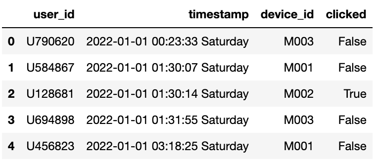
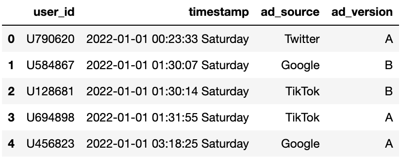
From these you can see that they share columns such as 'user_id' and 'timestamp' which will be useful for merging the datasets later on.
Data Cleaning
Next, I checked how many unique users and advertisements were in each dataset to see if there were any duplicates.
print(users.nunique())
print(advertisements.nunique())
From this data, I could see that there are a varing amount of unique users and advertisements in each dataset, which I will have to take into consideration when merging the two tables. Because of the decrepancy in the number of data in each set I decided to use the inner join method to merge the datasets. This will allow me to only keep the data that is present in both datasets. As there are two columns that are shared between the two datasets, I will merge the datasets on both 'user_id' and 'timestamp' to ensure that the data is matched correctly.
users_ads = pd.merge(left = users,
right = advertisements,
left_on = ['user_id', 'timestamp'],
right_on = ['user_id', 'timestamp'],
how = 'inner')
users_ads.head()
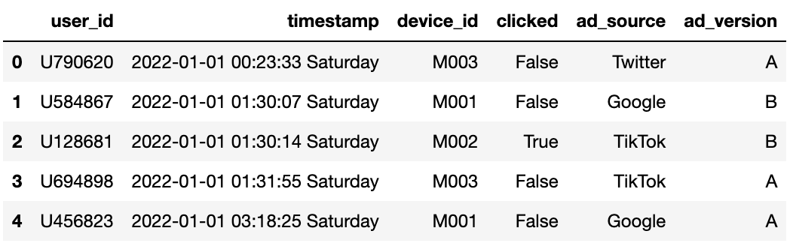
Creating Click-Through Rate Column
Now that I have merged the datasets, I need to create a new column that will help me calculate the click-through rate for each ad version. The click-through rate is calculated by dividing the number of clicks by the number of views. You can compute this by finding the mean of the 'clicked' column for each ad_version as the 'clicked' column contains 1 for a click and 0 for no click.
But before I did this I was curious if there was a difference in the number of views and the number of unique views for each ad version.
ad_view_count = users_ads.groupby('ad_version').agg({'user_id' : ['count', 'nunique']})
ad_view_count.columns = ['num_views', 'nunique']
ad_view_count
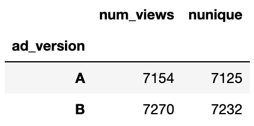
From this data, I can see that there is a difference in the number of views and unique views for each ad version. This shows that some users have seen the ads multiple times. However, for the purpose of calculating click-through rate, I will be using the total number of views as this is the standard method for calculating click-through rate.
ad_ctr_pct = users_ads.groupby('ad_version').agg({'clicked' : 'mean'})
ad_ctr_pct.columns = ['click_rate']
ad_ctr_pct
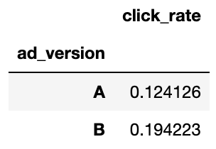
From this data, I can see that ad version B has a higher click-through rate than ad version A, of over 7%. This supports my hypothesis that version B would be more effective.
Performance by Social Media Platform
Next, I wanted to see if there was a difference in the effectiveness of the ads across different social media platforms. To do this, I grouped the data by both 'ad_version' and 'platform' and calculated the click-through rate for each combination.
ad_version = users_ads.groupby(['ad_source','ad_version']).agg({'clicked':'mean'})
ad_version.columns = ['ctr']
ad_version
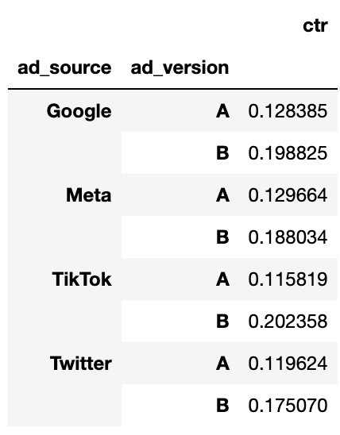
When trying to interpret this data, I found it a bit difficult as it was not in a very clear format. So, I decided to pivot the data to make it easier to read and compare the click-through rates across platforms.
ad_social = pd.pivot_table(ad_version,
index = 'ad_version',
columns = 'ad_source',
values = 'ctr'
)
ad_social
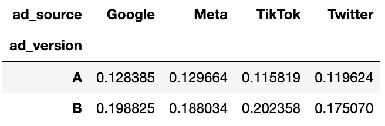
From this data, it is clear that the click-through rates vary across different social media platforms, however they all have the same trend of ad version B being more effective than ad version A. This supports my hypothesis that the effectiveness of ads would vary across social media platforms. Additionally, it is interesting to note that the highest click-through rate for version A is Meta, but for version B it is Twitter. This suggests that different platforms may have different user behaviours and demographics that affect ad performance. It would be interesting, for a future analysis, to delve deeper into why this is the case, but looking at age groups and other demographic factors could provide more insights.
Performance by Device Type
Before I begin any analysis, I first want to see the distribution of device types in the dataset.
devices = pd.read_csv('devices.csv')
devices
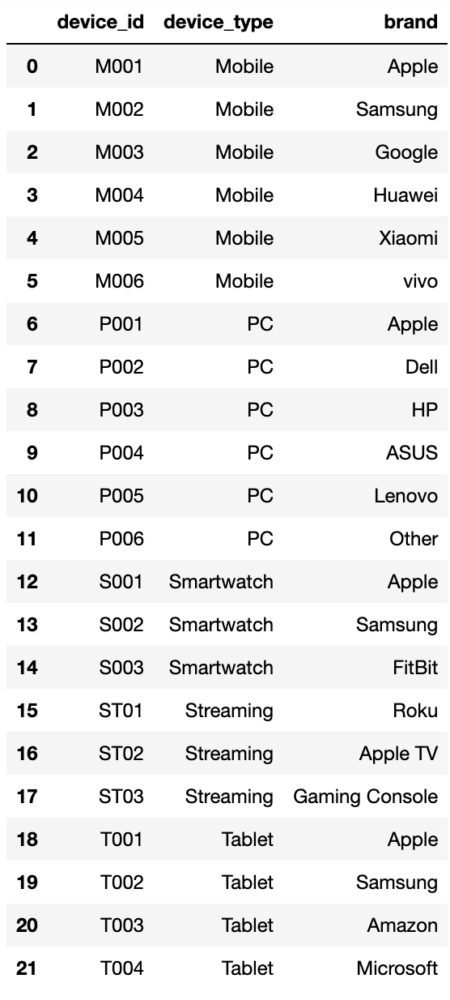
From this data, I can see that there are five device types: Mobile, PC, Smartwatch, Streaming and Tablet. However, the ads have not been shown on Smartwatches or Streaming devices, so I will only be analysing Mobile, PC and Tablet devices.
Next, I shall merge the devices data with the users_ads data to get a complete dataset for analysis. I will be using a left join this time as I want to keep all the data from users_ads and only add the device type where there is a match.
users_devices = pd.merge (left = users_ads,
right = devices,
left_on = 'device_id',
right_on = 'device_id',
how = 'left'
)
users_devices.head()
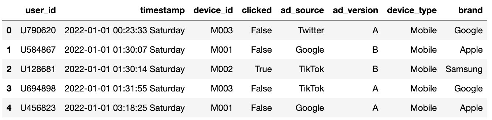
Now that I have the complete dataset, I can group the data by 'ad_version' and 'device_type' to calculate the click-through rate for each combination.
ad_devices = pd.pivot_table(users_devices,
index = 'ad_version',
columns = 'device_type',
values = 'clicked',
aggfunc = 'mean')
ad_devices
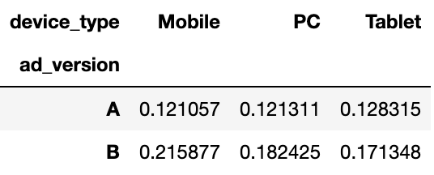
From this data, I can see that the click-through rates vary across different device types, with the common trend of ad version B being more effective than ad version A. This supports my hypothesis that targeting specific device types could be beneficial for future ad campaigns. However, the differences in click-through rates across device types are not as pronounced as those across social media platforms. Additionally, it is interesting to note that the highest click-through rate for version A is on Tablets, but for version B it is on Mobile devices. This suggests that different device types may have different user behaviours that affect ad performance.
Weekday and Weekend Breakdown
Now that I've answered the main questions, I wanted to do some additional analysis to see if there were any other interesting insights that could be gained from the data. I decided to look at the performance of the ads on weekdays versus weekends. To do this, I will be using the Split-Apply-Combine (SAC) method. Initially, I will split the data into two groups: weekdays and weekends.
Splitting the Data
# First, extract the day of the week from the timestamp
users_devices['day_of_week'] = users_devices['timestamp'].str.split(' ', expand=True)[2]
# Boolean mask to identify weekends
is_weekend = (users_devices['day_of_week']=='Saturday')|(users_devices['day_of_week']=='Sunday')
weekends = users_devices[is_weekend]
weekdays = users_devices[~is_weekend]
weekdays.head()
weekends.head()
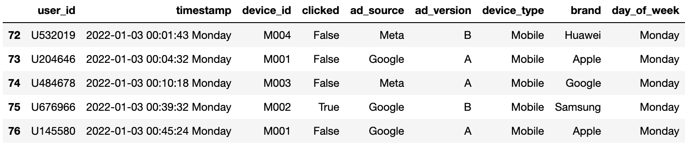
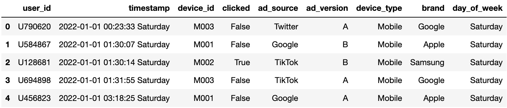
Applying Function to Data
Now that I have split the data into weekdays and weekends, I can apply the click-through rate calculation to each group. I will group the data by 'device_type' and 'ad_version' to see if there are any differences in performance based on device type during weekdays and weekends.
weekday_ctr = weekdays.groupby(['device_type', 'ad_version']).agg({'clicked':['count','mean']})
weekday_ctr.columns = ['weekday_views', 'weekday_rate']
weekday_ctr
weekend_ctr = weekends.groupby(['device_type', 'ad_version']).agg({'clicked':['count','mean']})
weekend_ctr.columns = ['weekend_views', 'weekend_rate']
weekend_ctr
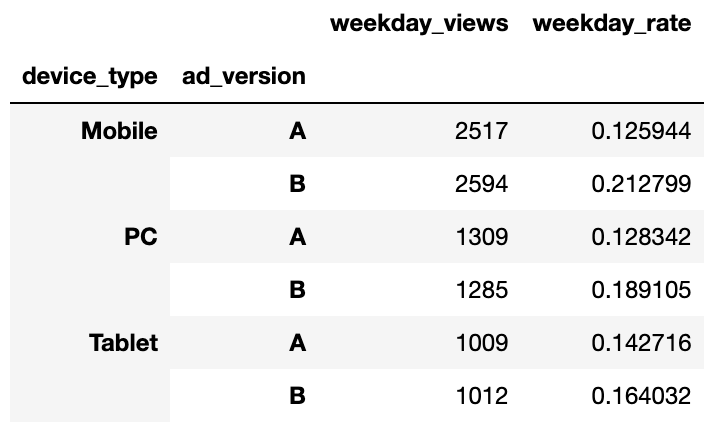
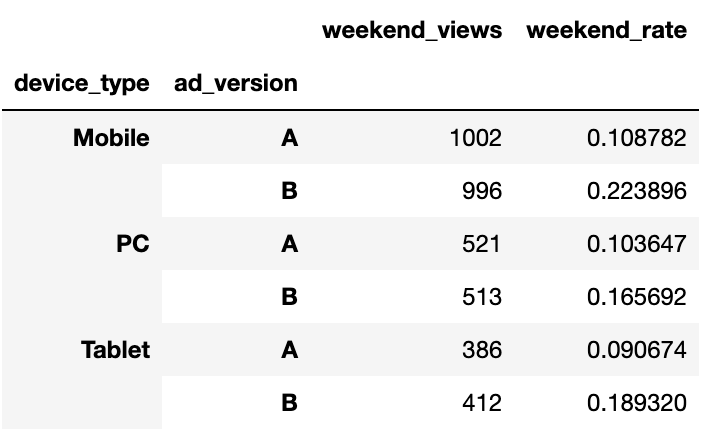
Combining the Results
Finally, I will combine the results from the weekday and weekend analyses to see the differences in click-through rates.
combined_ctr = pd.merge(left = weekday_ctr,
right = weekend_ctr,
left_on = ['device_type','ad_version'],
right_on = ['device_type','ad_version'],
how = 'inner')
combined_ctr
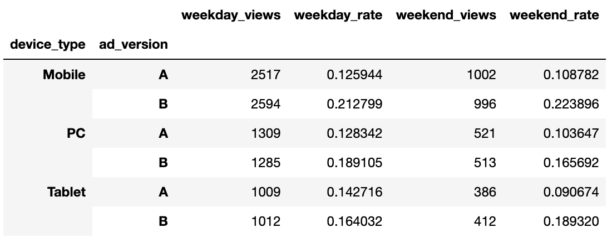
From this data, I can see that there are big differences in click-through rates between weekdays and weekends, which is to be expected as there are more days in the week than at the weekend. To combat this I will find the average click-through rate for weekdays and weekends. This will give a better idea of the overall performance of the ads across different device types.
combined_ctr['weekday_views'] = combined_ctr['weekday_views'] / 5
combined_ctr['weekend_views'] = combined_ctr['weekend_views'] / 2
combined_ctr
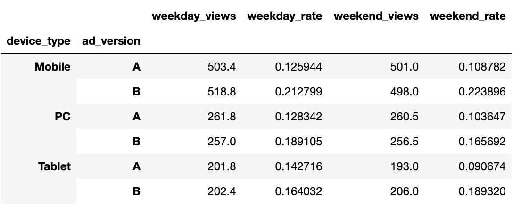
From this final data, I can see that the click-through rates are fairly consistent across weekdays and weekends, with ad version B being more effective across all device types. This suggests that the ads perform similarly regardless of the day of the week. Looking at the differences between version for each device type and day, it is clear that version B consistently outperforms version A. This further supports the conclusion that version B is the more effective ad overall.
Conclusion
In conclusion, after analysing the data, it is clear that ad version B is more effective than ad version A across all social media platforms and device types. The click-through rates for version B were consistently higher than those for version A, supporting my initial hypothesis. Additionally, there were variations in ad performance across different social media platforms and device types, indicating that targeting specific platforms and devices could be beneficial for future ad campaigns. Overall, this analysis provides valuable insights into ad effectiveness and can inform future marketing strategies.